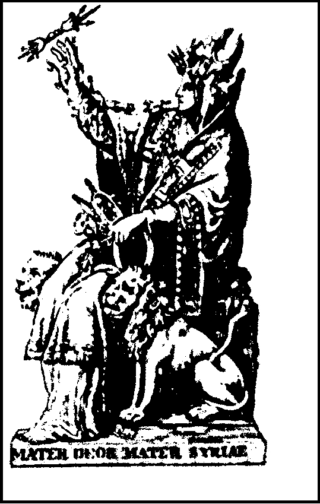

| Развитие шифров | Изобретения | Немного о... | На главную..>>|
Книжный шифр

В своём сочинении «О перенесении осады» Эней описывает
ещё одну технику тайнописи, позже названную «книжный шифр».
Он предложил делать малозаметные дырки рядом с буквами
в книге или другом документе. Много позже,
аналогичный шифр использовали германские шпионы в Первой мировой войне.